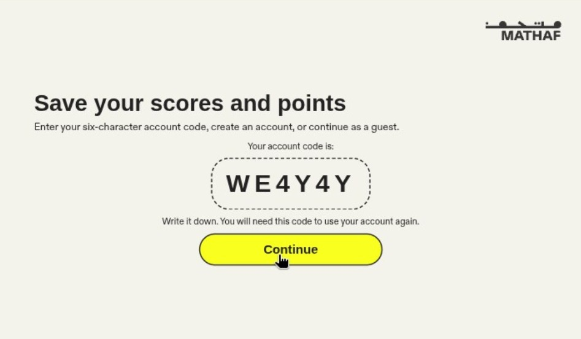
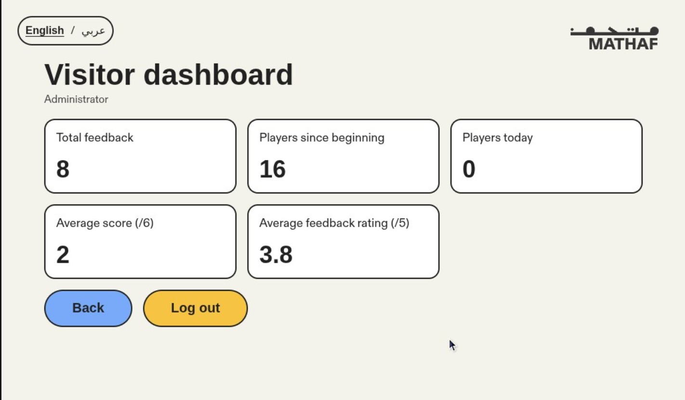
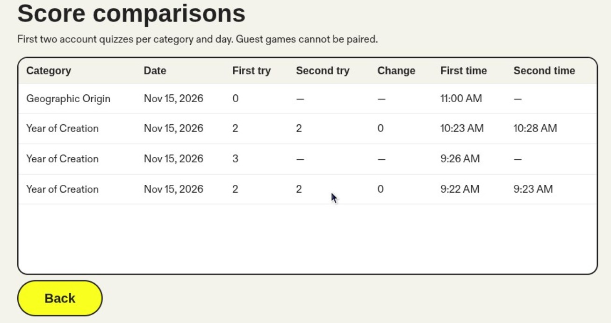
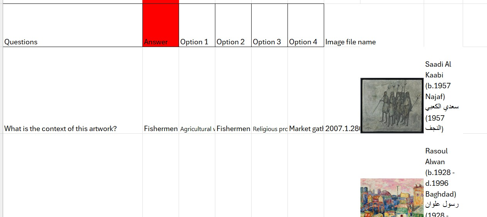
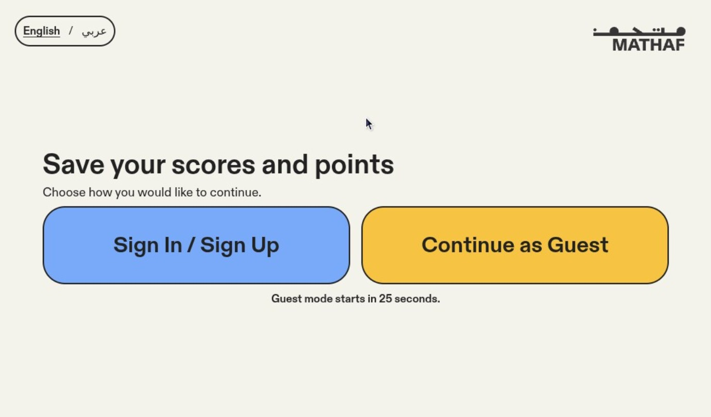

Sunday: I updated the kiosk landing page so the selected artwork fills the screen. I also made visitor accounts so people can save their scores. When account holders choose Play again, they go back to category selection; guests return to the landing page. I added an Exit button to log out, and after two minutes without activity the kiosk returns home and clears the active account. Results now show the average score for today’s accounts out of 12. I also changed the points system so quizzes one and two, and quizzes three and four, are handled as pairs. The second pair earns the average of its scores, rounded down, before the daily limit. Account names are now unique regardless of capitalisation, with a clear error in English or Arabic.

Monday: I worked on the museum report and created an admin dashboard to track quiz plays, feedback and average scores. I added detailed pages showing anonymous first and second quiz scores, as well as how many visitors gave each feedback rating. I also added a compact statistics display for visitors and guests. The admin account is now saved locally, so it stays available after the app restarts. I changed the daily average score back to a scale of six and created the Context category questions in an Excel sheet.



Tuesday: I replaced the Origin category with Context, added 12 questions and updated the leaderboard and dashboard. I uploaded the images to the Raspberry Pi so they can be shown locally. I fixed inconsistent Year captions, changed the answer for Martyr’s Epic to “Martyrdom,” and replaced three damaged font files so the Pi displays the fonts used by Mathaf. I looked into an on-screen keyboard for entering names and codes, but it still needs testing. I also discussed the full quiz process with Otba to finalise it, then asked Iman to try the quiz and share her suggestions.

Went to 4 Msheireb Museum Houses, each one showcasing different stories (Slavery, Msheireb, Oil Production, Radwani House History). Having various technologies and ways to make users interact with it.